MNIST 条件 VAE 与 GAN：质量、覆盖、控制与效率对比
实验启动：2026-10-10 17:53（Asia/Shanghai）。本报告由保存的实际权重与评估结果生成；数据为 MNIST，生成模型是本仓库既有条件卷积 VAE 和条件 DCGAN。正式实验共 6 次训练，随机种子为 42, 43, 44。
1. 主要结果：分别回答两种预算下的比较
下表为独立训练种子的均值 ± 样本标准差（ddof=1），百分数后的标准差同样以百分点表示。条件准确率、precision、recall 越高越好，MMD² 越低越好；训练时间以秒计。误差条描述训练种子的差异，不是置信区间。
| 检查点 | 条件准确率 ↑ | MMD² ↓ | 分布 precision ↑ | 分布 recall ↑ | 累计训练秒数 |
|---|---|---|---|---|---|
| VAE20 | 89.32 ± 0.35% | 3589.6 ± 62 | 71.70 ± 0.40% | 54.00 ± 1.33% | 26.12 ± 0.11 |
| GAN20 | 99.92 ± 0.02% | 442.79 ± 113 | 73.98 ± 1.02% | 43.43 ± 2.36% | 60.96 ± 0.57 |
| GAN50 | 99.94 ± 0.01% | 300.65 ± 96.8 | 80.76 ± 1.14% | 51.02 ± 4.32% | 152.10 ± 1.36 |
本次同为 20 epoch 的直接答案是：GAN20 的条件正确率较高，GAN20 的特征分布 MMD² 较低，VAE20 的覆盖 recall 较高；VAE20 训练更快，VAE20 的生成吞吐量更高。 这些结论分别来自不同测量轴，下面保留数值和逐种子证据，避免把单项优势概括为所有方面都更好。
同 20 epoch 对照中，precision 与 recall 的优势分属不同模型，出现了质量线索与覆盖的实际取舍：应根据需求分别判断生成图靠近真实分布的程度，以及真实字形覆盖的程度。
MMD² 与覆盖 recall 也没有给出同一排序。这种分歧保留在结论中：前者检验核特征统计的接近程度，后者检验近邻球对真实样本的覆盖，二者不能相互替代。
相同数据遍数：VAE20 与 GAN20
GAN20 相比 VAE20：条件准确率提高 10.60 个百分点（3/3 个相同编号种子的结果沿有利方向变化）；MMD²降低 3146.9（3/3 个相同编号种子的结果沿有利方向变化）；分布 precision提高 2.29 个百分点（3/3 个相同编号种子的结果沿有利方向变化）；分布 recall降低 10.57 个百分点（0/3 个相同编号种子的结果沿有利方向变化）。这是预设比较的描述性结果，三个种子不足以据此宣称统计显著性。
两者在 20 epoch 时看过相同数量的训练样本，但 GAN 每批交替更新生成器与判别器、网络规模也不同，因此这项对照不等价于相同计算预算。
默认训练设置：VAE20 与 GAN50
GAN50 相比 VAE20：条件准确率提高 10.62 个百分点（3/3 个相同编号种子的结果沿有利方向变化）；MMD²降低 3289（3/3 个相同编号种子的结果沿有利方向变化）；分布 precision提高 9.07 个百分点（3/3 个相同编号种子的结果沿有利方向变化）；分布 recall降低 2.98 个百分点（1/3 个相同编号种子的结果沿有利方向变化）。这是预设比较的描述性结果，三个种子不足以据此宣称统计显著性。
同一个 GAN 从 20 到 50 epoch
GAN50 相比 GAN20：条件准确率提高 0.02 个百分点（2/3 个相同编号种子的结果沿有利方向变化）；MMD²降低 142.14（2/3 个相同编号种子的结果沿有利方向变化）；分布 precision提高 6.78 个百分点（3/3 个相同编号种子的结果沿有利方向变化）；分布 recall提高 7.59 个百分点（3/3 个相同编号种子的结果沿有利方向变化）。这是预设比较的描述性结果，三个种子不足以据此宣称统计显著性。
更多训练并非每个种子都一致改善：种子 44 的 MMD² 从 370.707 升至 406.700。虽然跨种子均值可能更好，单次轨迹仍存在退化或波动；不能把 50 epoch 概括成在所有运行上都优于 20 epoch。
GAN20 是这三次 GAN50 训练的中途检查点，不是另外三次训练。这里报告预先约定的两个时点，没有根据测试集结果选择最佳 epoch。所有逐种子数值见 per_seed.csv，逐类数值见 per_class.csv。

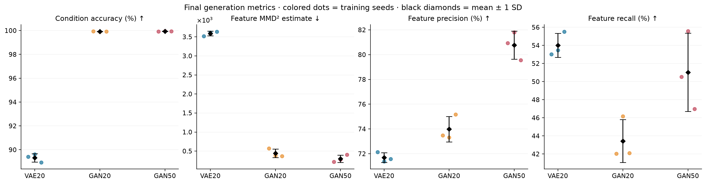
生成指标的各训练种子原始值与均值 ± 样本标准差；标准差来自独立训练种子。
2. 统一协议与评价含义
MNIST 原训练集被固定分层划为 50,000 张训练图、10,000 张验证图，划分种子 20261010。官方测试集仅用于最终评估。过程评估从验证集按每类 200 张固定抽样，最终从测试集按每类 800 张固定抽样，并生成相同数量的每类图片。参考索引和完整划分已随报告保存，训练阶段没有使用测试指标选模型。
| 项目 | VAE | GAN |
|---|---|---|
| Epoch | 20 | 50 |
| 潜变量维度 / batch size | 20 / 128 | 20 / 128 |
| Adam 学习率 | 0.001 | 0.0002 |
| Adam betas | (0.9, 0.999) | (0.5, 0.999) |
| 标签表示 | 10 维 one-hot | 50 维 embedding |
| 原生训练目标 | 按样本平均 BCE 重建项 + KL | D: real + 0.5×(fake+wrong-label); G: real-target BCE |
所有图片为原始 28×28 灰度图，不进行数据增强。已有 PNG 被无损缓存为 uint8，加载后除以 255；GAN 在训练时进一步映射到 [−1,1]，评估输出统一还原到 [0,1]。两模型保留原始结构、初始化及损失函数；每个 epoch 不丢弃最后不足一批的样本。
统一分类器为两层 3×3 卷积（32/64 通道，padding=1；各接 ReLU 和 2×2 最大池化）、128 维 ReLU 特征层和十分类输出。只使用同一训练划分，Adam 学习率 0.001，batch size 128，训练 10 epoch；按验证准确率保存最佳权重后冻结。最佳验证准确率为 99.050%，官方完整测试集准确率为 98.960%。分类器误差和特征偏好仍会影响生成评价，分类器判断与人类视觉质量不完全相同。
指标定义
条件准确率：分类器预测是否等于请求标签 y。它检测条件遵循程度，不单独判断自然程度或类内多样性。下述分布指标按请求标签与真实标签分别分组计算，再对十个数字等权平均；没有先筛掉分类错误的生成图。
MNIST 特征 MMD²：在冻结分类器的 128 维、未经 PCA 投影的特征上，使用 \(k(x,y)=(x^\top y/128+1)^3\)。无偏估计为
核距离借鉴 Bińkowski 等，Demystifying MMD GANs，ICLR 2018 的 KID 评价思路。本实验替换了特征提取器，称为 MNIST 特征 MMD²，不能直接当作标准 Inception KID 与论文分数比较。有限样本无偏估计可以为负，因此保留原值；绝对数值也依赖特征的尺度。
分布 precision / recall：采用 Kynkäänniemi 等，Improved Precision and Recall Metric，NeurIPS 2019 的近邻球覆盖思想。每个特征点以第 3 个其他近邻的距离为半径，球的并集近似其分布支持域；precision 是生成点落入真实球并集的比例，recall 是真实点落入生成球并集的比例。二者均在 128 维空间计算。高 precision 与高 recall 分别提供质量、覆盖的线索，二者可能出现取舍；它们不是分类 precision/recall，也不能完整表示视觉质量和所有写法多样性。样本量、离群点和特征空间都会影响这些估计。
3. 全类别生成与条件控制

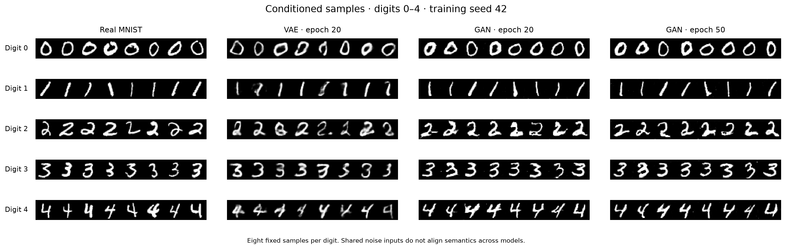
真实 MNIST 与三个模型检查点的全类别样本网格；固定采样种子，不按生成效果挑选样本。

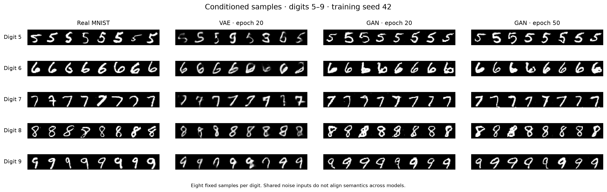
真实 MNIST 与三个模型检查点的全类别样本网格；固定采样种子，不按生成效果挑选样本。
主图固定使用训练种子 42，真实样本和每种检查点每类展示前 8 个固定索引。图片不按分类置信度或视觉好坏筛选。每行对应请求标签，列展示同类的不同采样；除类别是否正确，还应对照真实图检查笔画连贯性、字形重复和灰度边缘。另两个训练种子的同规则网格放在附录。
固定样本的视觉观察：在固定种子 42 的网格中，VAE 的灰色边缘和局部弱笔画较明显；请求数字 5 的第 4、第 7 张出现更像 9、6 的闭环字形。GAN 网格的类别外观更一致、边缘更清楚，但部分数字 6 仍有粗重、粘连的笔画。这些是图中个例，与整体指标互相参照，不能把 8 张样本的观感代替总体统计。

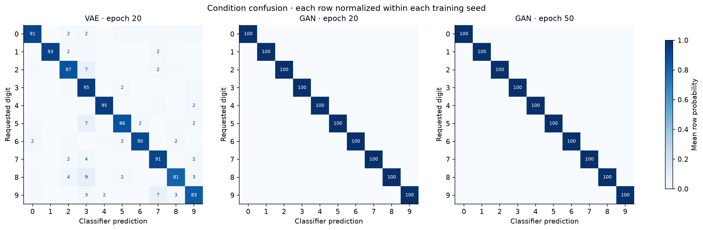
各训练种子先按请求数字行归一化，再跨种子平均的条件混淆矩阵；格内为百分比。

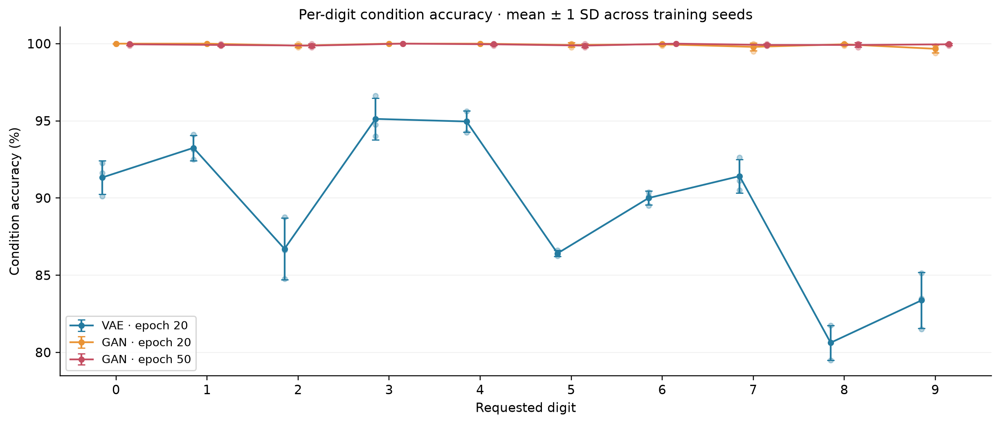
逐数字的条件准确率及训练种子间波动，避免总体均值掩盖薄弱类别。
VAE20：条件准确率最低的数字为 8（跨种子均值 80.62%），最高为 3（95.12%）。合并种子的最大非对角混淆是请求 8、预测 3，共 210 张，占请求 8 的 8.75%。这个现象由冻结分类器判断，应结合失败案例看其是否属于字形模糊或分类器误识别。
GAN20：条件准确率最低的数字为 9（跨种子均值 99.67%），最高为 0（100.00%）。合并种子的最大非对角混淆是请求 2、预测 3，共 3 张，占请求 2 的 0.12%。这个现象由冻结分类器判断，应结合失败案例看其是否属于字形模糊或分类器误识别。
GAN50：条件准确率最低的数字为 2（跨种子均值 99.88%），最高为 3（100.00%）。合并种子的最大非对角混淆是请求 5、预测 3，共 3 张，占请求 5 的 0.12%。这个现象由冻结分类器判断，应结合失败案例看其是否属于字形模糊或分类器误识别。
4. 生成质量、类内覆盖与共同特征空间

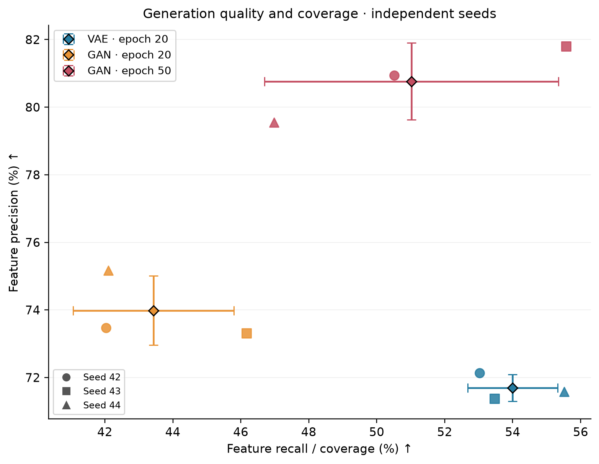
共同特征空间中的生成精确率与覆盖率；各点是训练种子，菱形和误差线为跨种子均值与标准差。

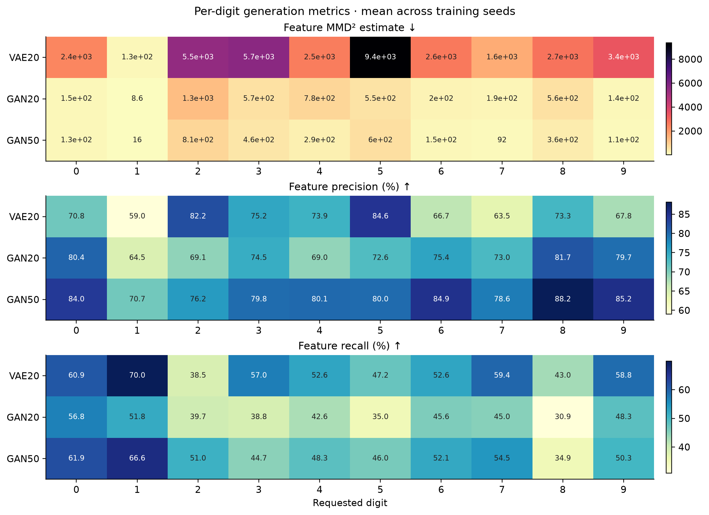
逐类 MMD²、特征精确率和覆盖率热图；每一列对应请求生成的数字。
VAE20 的分布 precision 为 71.70%，recall 为 54.00%，MMD² 为 3589.6；recall 最低的是数字 2。三种子的条件准确率标准差为 0.35 个百分点，recall 标准差为 1.33 个百分点。这些数值描述本次实现的质量、覆盖与训练波动，不能单凭一个指标把模型排成全面优劣。
GAN20 的分布 precision 为 73.98%，recall 为 43.43%，MMD² 为 442.79；recall 最低的是数字 8。三种子的条件准确率标准差为 0.02 个百分点，recall 标准差为 2.36 个百分点。这些数值描述本次实现的质量、覆盖与训练波动，不能单凭一个指标把模型排成全面优劣。
GAN50 的分布 precision 为 80.76%，recall 为 51.02%，MMD² 为 300.65；recall 最低的是数字 8。三种子的条件准确率标准差为 0.01 个百分点，recall 标准差为 4.32 个百分点。这些数值描述本次实现的质量、覆盖与训练波动，不能单凭一个指标把模型排成全面优劣。
作为量尺检查，用真实训练图片作为待评估样本、真实测试参考不变时，MMD² 为 30.05，precision 为 85.21%，recall 为 87.93%。这一实对实基线也受有限样本影响，并非必须恰好得到 MMD²=0 或 precision/recall=100%。它用于理解量级，不用于训练选择。完整记录见 real_baseline.json。

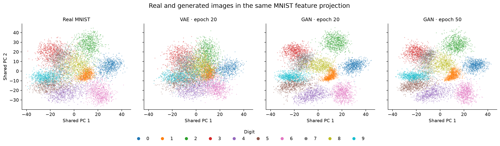
共同 MNIST 分类器特征及同一 PCA 投影中的真实与生成分布；坐标和范围一致，二维重叠仅作定性解释。
第一、第二主成分分别解释真实训练特征方差的 20.35% 与 17.17%，合计 37.52%。因此二维图保留的信息有限，重叠区域不能被直接解释为两组数据分布相同。
PCA 仅在真实训练集特征上拟合一次，所有面板共享中心、投影轴与坐标范围。数字颜色表示真实标签或请求标签；相同位置只说明在这两个投影方向上接近，不保证高维分布一致。上述统计仍在原始 128 维特征上计算，二维图不用于替代 MMD² 或覆盖指标。
5. 训练效率、稳定性与生成速度

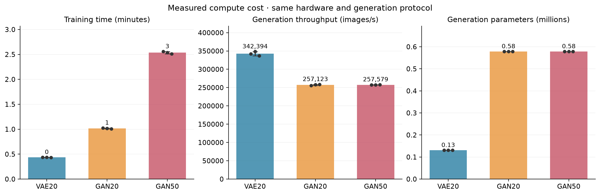
实测训练耗时、生成吞吐量与生成端参数量；吞吐量使用每次训练所得模型的重复计时中位数。

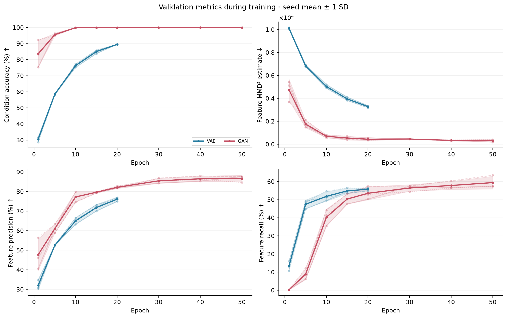
随训练轮数变化的生成指标；细线是训练种子，粗线和阴影为同一轮的均值与标准差。

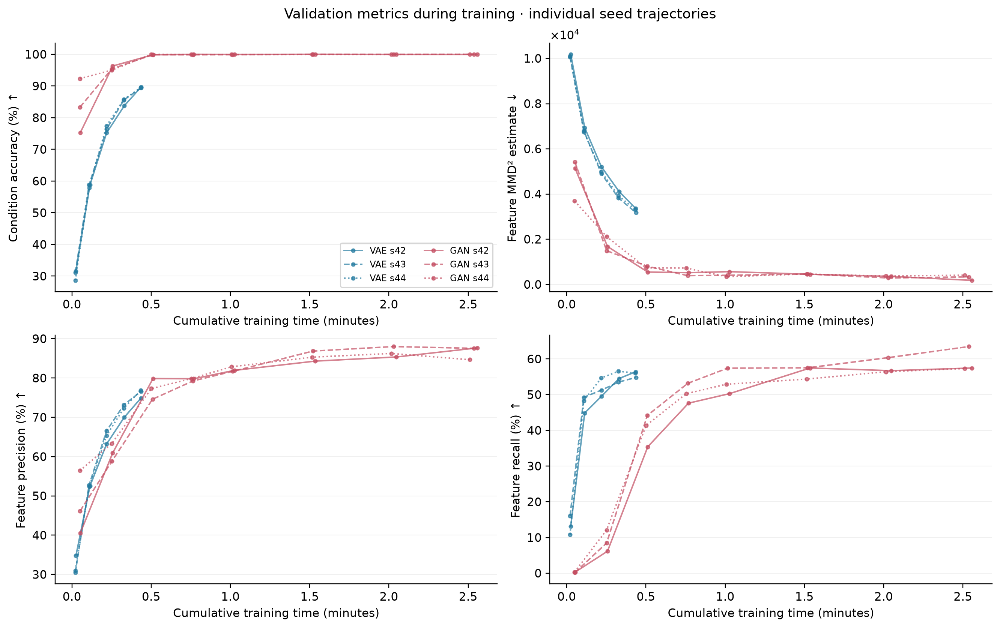
随累计训练耗时变化的各训练种子指标，时间轴不进行插值平均。

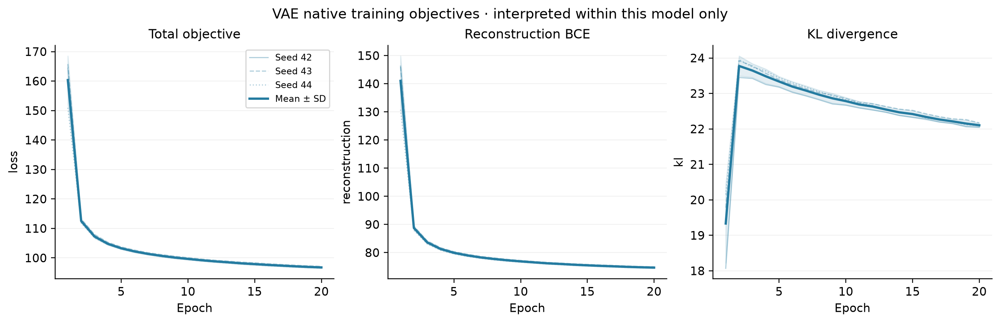
VAE 自身训练目标的跨种子变化；损失值不用于 VAE 与 GAN 间的性能排序。

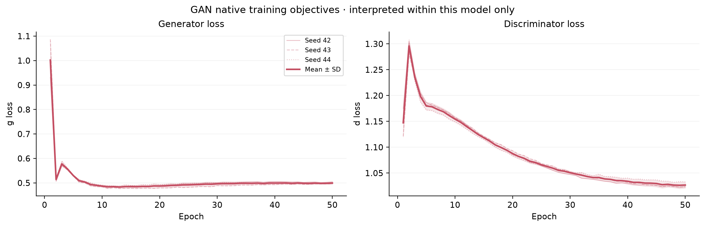
GAN 自身训练目标的跨种子变化；损失值不用于 VAE 与 GAN 间的性能排序。

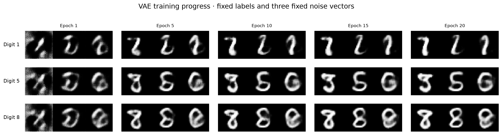
VAE 的训练过程：数字 1、5、8 各跟踪三个固定潜变量，避免仅展示一个样本。

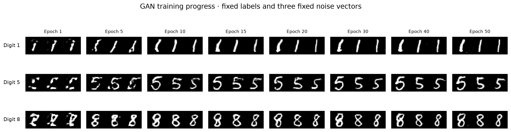
GAN 的训练过程：数字 1、5、8 各跟踪三个固定潜变量，避免仅展示一个样本。
曲线在预先约定的 epoch 节点评估：验证参考和生成图均每类固定抽取同样数量，阴影或误差条为训练种子标准差；实际种子点保留用于识别波动。累计训练时间包含内存数据加载、主机到 GPU 传输、前反向传播与优化器更新，GPU 同步后记时；排除首次 PNG 解码和缓存构建、辅助分类器训练、在线评估、权重保存和绘图。由于统一采用无损内存缓存，这里的加载耗时不代表逐张 PNG 磁盘读取的旧入口性能。
训练进展网格固定多个数字和多份潜变量，观察同一输入随训练的变化。VAE 的 BCE/KL 与 GAN 的对抗损失分别展示，它们含义和尺度不同，不能直接跨方法比较大小；GAN 的某项 loss 下降也不自动表示生成质量提高。过程曲线使用验证集且每类样本量更小，因此不能直接把最终测试 P/R 接在曲线末端。
| 完整训练任务 | 训练计算秒数 | 在线验证秒数 | 保存等其他秒数 | 任务墙钟秒数 |
|---|---|---|---|---|
| VAE | 26.12 ± 0.11 | 0.11 ± 0.00 | 0.14 ± 0.00 | 26.37 ± 0.11 |
| GAN | 152.10 ± 1.36 | 0.21 ± 0.01 | 0.62 ± 0.02 | 152.93 ± 1.39 |
辅助分类器训练及验证墙钟耗时：8.61 秒。6 次生成模型训练任务的墙钟总和为 537.90 秒。以上每行按训练种子汇总，任务墙钟从模型和 loader 构建完成后开始，不是整个实验端到端耗时；GPU 顺序运行各任务，没有把 GAN20 额外计算成独立任务。
最终评估、尺度扫描及诊断数据准备共耗时 8.49 秒，单独记录，不计入训练秒数。
| 检查点 | 训练参数总数 | 生成使用参数 | 生成 10,000 张耗时 / 秒 | 吞吐量 / 张每秒 |
|---|---|---|---|---|
| VAE20 | 289,785 | 130,529 | 0.02921 ± 0.00050 | 3.4239e+05 ± 5.83e+03 |
| GAN20 | 725,782 | 578,357 | 0.03889 ± 0.00025 | 2.5712e+05 ± 1.64e+03 |
| GAN50 | 725,782 | 578,357 | 0.03882 ± 0.00007 | 2.5758e+05 ± 448 |
生成基准统一 batch size 128，每次生成 10,000 张，预热后重复 5 次并在 GPU 同步条件下计时；每个种子先取 5 次耗时中位数，再跨种子汇总。该指标仅衡量本次硬件和批量下的生成计算，只计已驻留 GPU 的输入通过 decoder/generator 前向传播；不计输入随机采样、传输、输出后处理、分类器或 PNG 写盘。VAE 训练参数包括编码器与解码器，生成参数仅计 decoder_input 和 decoder；GAN 训练参数是 G+D，生成只使用 G。
本轮同为 20 epoch，GAN/VAE 的累计训练耗时比为 2.33 倍。因此评价效率时应同时看生成质量变化与实际时间，而不是仅看 epoch 数。
6. 潜变量插值与标签切换

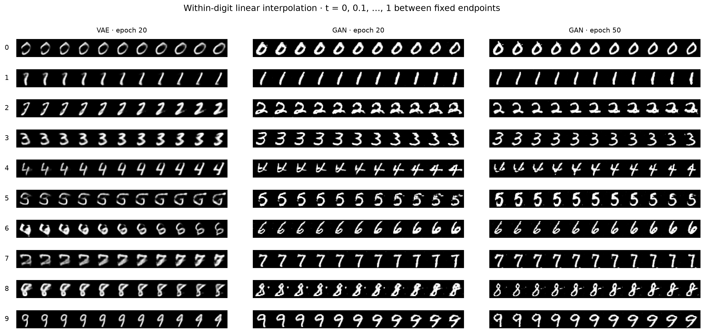
同类别的随机潜变量端点之间进行线性插值；各行固定数字，三种检查点按同一采样协议展示，不解释为跨模型语义对齐。

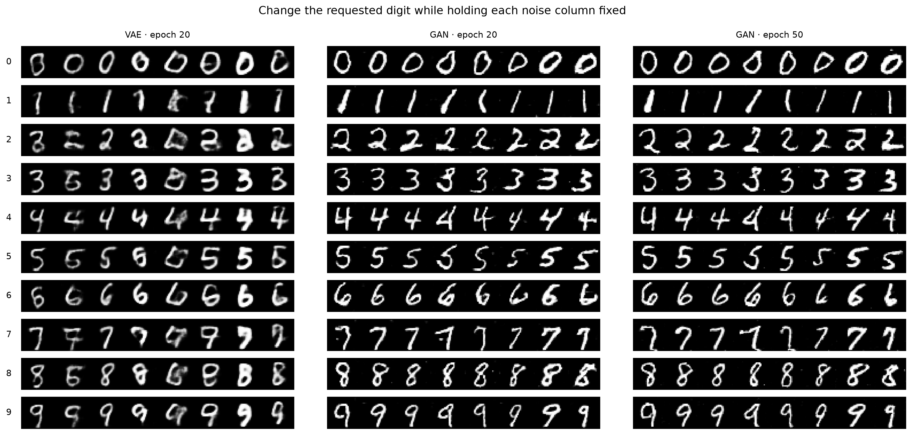
每一列保持潜变量固定，从数字 0 到 9 改变条件标签，观察类别控制与笔画风格变化。
每个方法在相同请求数字下，对两份预先固定的随机潜变量进行 11 步线性插值；另外固定潜变量，把条件标签依次设为 0–9。前者检查连续改变噪声时字形是否平滑变化，后者检查相同噪声是否能随标签改变类别。各方法使用相同输入协议，但潜变量坐标的语义没有对齐，不能要求两种模型在某个坐标产生同样的笔画变化。
线性插值中点的潜变量方差比端点小：独立标准高斯端点在中点的逐维方差为 1/2。因此中间字形的变化同时受采样半径变化影响，不能全部解释为语义控制；下一节的噪声尺度扫描提供相邻证据。这里只做随机先验潜变量的共同对照，未把 VAE 专有的真实图片编码重建混入双方生成比较。
| 检查点 / 种子 | 固定噪声标签切换准确率 | 插值点条件准确率 | 相邻插值图像素 L1 均值 |
|---|---|---|---|
| VAE20 / 42 | 85.00% | 93.64% | 0.01319 |
| GAN20 / 42 | 100.00% | 100.00% | 0.01671 |
| GAN50 / 42 | 100.00% | 100.00% | 0.01621 |
标签切换表基于 8 份固定噪声×10 个标签，共 80 张图片；插值表基于 10 个数字×11 个位置，共 110 张图片，只对展示种子计算。相邻像素 L1 测量图像变化幅度，值小可能表示平滑，也可能表示变化不足，不能独立用来评判语义可控性或多样性。
固定样本的视觉观察：固定同一潜变量列切换标签时，VAE 的部分列出现跨标签延续的粗细和弯折，同时可见请求 1、2、3 等标签的字形偏移；GAN 的这组 80 张图片都被分类器识别为请求标签。它说明本次实现对这组输入的条件遵循有差异，但未证明差异由某一个训练机制单独造成。
7. 采样尺度：正确性与覆盖如何变化

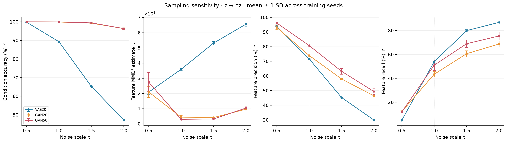
改变高斯噪声尺度后的质量、覆盖与条件准确率；τ=1 为训练先验，误差线来自训练种子。

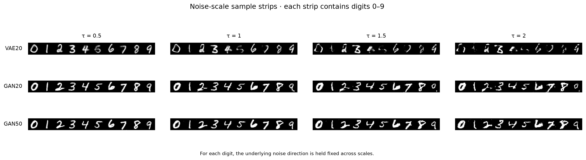
每个数字使用同一潜变量方向、只改变尺度的样本网格；每条由数字 0–9 组成。
对同一批基础噪声 ε，分别使用 z=τε，τ∈{0.5,1,1.5,2}。各尺度使用同一批请求标签、相同最终参考和采样数；τ=1 是主实验标准先验。该扫描是预先设定的诊断，不使用测试集结果选择新的正式最优配置。
VAE20：τ=0.5 时条件准确率 99.81%、precision 93.85%、recall 4.93%；τ=2 时分别为 47.28%、29.93%、86.83%。
VAE20 从 τ=0.5 增至 τ=2 时，条件准确率变化 -52.53 个百分点，precision 变化 -63.92 个百分点，recall 变化 +81.90 个百分点，MMD² 变化 +4472。增加潜变量幅度是否带来更好的覆盖，需要与错误类别和分布偏离同时判断，不能仅按图像变化幅度定性。
GAN20：τ=0.5 时条件准确率 100.00%、precision 93.08%、recall 12.19%；τ=2 时分别为 96.40%、46.44%、68.75%。
GAN20 从 τ=0.5 增至 τ=2 时，条件准确率变化 -3.60 个百分点，precision 变化 -46.65 个百分点，recall 变化 +56.55 个百分点，MMD² 变化 -1135.6。增加潜变量幅度是否带来更好的覆盖，需要与错误类别和分布偏离同时判断，不能仅按图像变化幅度定性。
GAN50：τ=0.5 时条件准确率 100.00%、precision 96.13%、recall 11.90%；τ=2 时分别为 96.37%、49.38%、75.46%。
GAN50 从 τ=0.5 增至 τ=2 时，条件准确率变化 -3.63 个百分点，precision 变化 -46.75 个百分点，recall 变化 +63.56 个百分点，MMD² 变化 -1709.6。增加潜变量幅度是否带来更好的覆盖，需要与错误类别和分布偏离同时判断，不能仅按图像变化幅度定性。
小尺度下即使条件准确率接近满分，recall 也可能很低：正确生成指定数字并不意味着覆盖了该数字的多种写法。另一端，若大尺度同时降低准确率与 precision、却提高 recall，不能把这种提高直接称为更多有效写法；离群点及其较大的近邻球可能扩大估计支持域。这正是需要把正确性、质量与覆盖并列观察的原因。主比较始终保留 τ=1。
| 检查点 | τ | 条件准确率 | MMD² | precision | recall |
|---|---|---|---|---|---|
| VAE20 | 0.5 | 99.81 ± 0.03% | 2089.6 ± 145 | 93.85 ± 0.13% | 4.93 ± 0.41% |
| VAE20 | 1.0 | 89.32 ± 0.35% | 3589.6 ± 62 | 71.70 ± 0.40% | 54.00 ± 1.33% |
| VAE20 | 1.5 | 65.28 ± 0.36% | 5315.4 ± 110 | 45.31 ± 0.29% | 79.95 ± 0.86% |
| VAE20 | 2.0 | 47.28 ± 0.46% | 6561.6 ± 159 | 29.93 ± 0.50% | 86.83 ± 0.48% |
| GAN20 | 0.5 | 100.00 ± 0.00% | 2097.8 ± 353 | 93.08 ± 1.45% | 12.19 ± 1.25% |
| GAN20 | 1.0 | 99.92 ± 0.02% | 442.79 ± 113 | 73.98 ± 1.02% | 43.43 ± 2.36% |
| GAN20 | 1.5 | 99.27 ± 0.08% | 413.25 ± 37 | 57.96 ± 0.29% | 60.63 ± 2.61% |
| GAN20 | 2.0 | 96.40 ± 0.46% | 962.19 ± 31.6 | 46.44 ± 0.06% | 68.75 ± 2.48% |
| GAN50 | 0.5 | 100.00 ± 0.00% | 2750 ± 631 | 96.13 ± 0.79% | 11.90 ± 0.90% |
| GAN50 | 1.0 | 99.94 ± 0.01% | 300.65 ± 96.8 | 80.76 ± 1.14% | 51.02 ± 4.32% |
| GAN50 | 1.5 | 99.45 ± 0.06% | 318.53 ± 44 | 63.19 ± 2.04% | 68.98 ± 3.17% |
| GAN50 | 2.0 | 96.37 ± 0.43% | 1040.3 ± 125 | 49.38 ± 1.95% | 75.46 ± 3.42% |
固定样本的视觉观察：固定方向的尺度样本网格中，VAE 在 τ=1.5、2 时出现更弱、断裂的笔画，GAN 在相同尺度范围内多数示例仍保留清楚的数字轮廓。这个视觉现象与 VAE 大尺度下条件准确率和 precision 明显下降一致；单张图片中看到更大变化，并不自动意味着更好的有效多样性。
8. 最近邻与失败案例

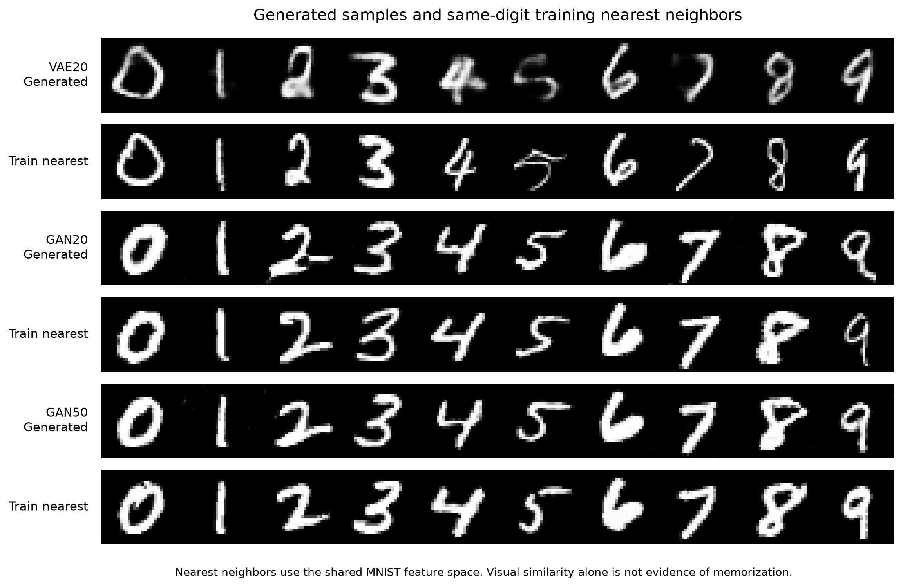
生成样本及同类别训练集特征最近邻；相似性用于检查，不能单独证明模型记忆训练图像。

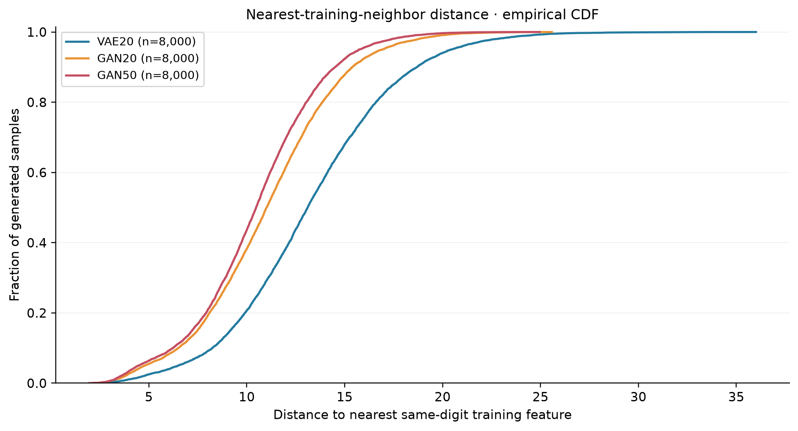
生成图像到同类训练特征最近邻距离的经验累积分布；距离大小不是独立的生成质量或记忆程度指标。

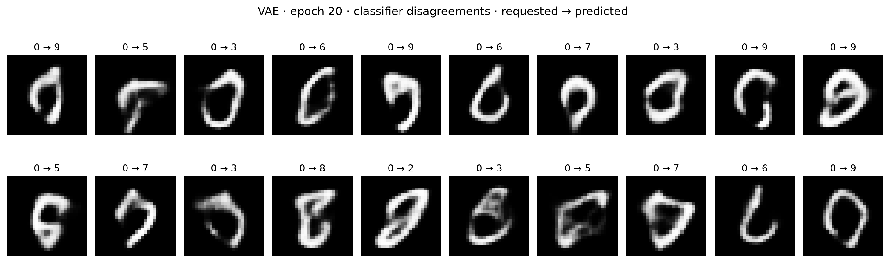
VAE · epoch 20 的分类器条件不一致案例；需结合图像判断，分类器预测不等于人工真值。

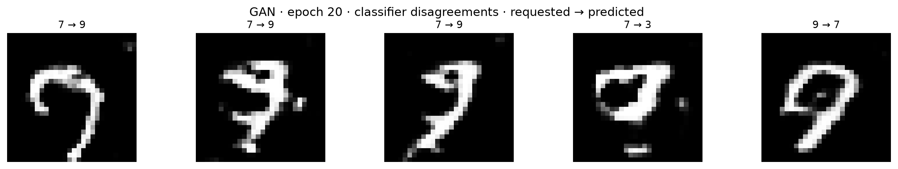
GAN · epoch 20 的分类器条件不一致案例；需结合图像判断，分类器预测不等于人工真值。

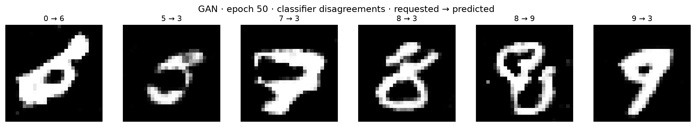
GAN · epoch 50 的分类器条件不一致案例；需结合图像判断，分类器预测不等于人工真值。
最近邻只在同类训练图片中搜索，依据同一个冻结分类器的高维特征距离；图中给出固定选取的生成图片及匹配到的训练图。接近的笔画既可能来自 MNIST 类内本来就相似，也可能反映有限覆盖，因此最近邻相似本身不证明记忆训练集。失败案例按预设顺序选取条件预测错误的样本，附请求与预测数字；这些是诊断展示，不能用少量案例替代总体错误率。
VAE20 在展示用种子 42 的 8,000 张最终生成图中，有 847 张不被分类器识别为请求类别（10.59%）；错误图库只能代表这一固定检测规则下的例子。
GAN20 在展示用种子 42 的 8,000 张最终生成图中，有 5 张不被分类器识别为请求类别（0.06%）；错误图库只能代表这一固定检测规则下的例子。
GAN50 在展示用种子 42 的 8,000 张最终生成图中，有 6 张不被分类器识别为请求类别（0.07%）；错误图库只能代表这一固定检测规则下的例子。
| 检查点 | 同类训练最近邻距离均值 | 距离中位数 | 实际展示错误数 |
|---|---|---|---|
| VAE20 | 13.3019 | 13.1047 | 20 |
| GAN20 | 11.0150 | 11.0108 | 5 |
| GAN50 | 10.4444 | 10.4756 | 6 |
最近邻距离统计基于展示种子的全部最终生成图；配对主图只显示每个请求数字的第一个样本。失败图按整体生成索引选最早 20 个条件错误，因此可能集中在前几个数字，这是固定排序的结果，不表示未展示的数字不会出错。更多原始诊断量见 visual_diagnostics.json。
固定样本的视觉观察：GAN20 的 5 张分类器分歧案例中，最后一张“请求 9、预测 7”仍有明显的 9 闭环，第一张“请求 7、预测 9”也有可辨认的 7 外观。因此不能把所有分类器分歧都当成人工确认的生成错误。最近邻配对具有相似轮廓，但若干配对在笔画粗细和连接细节上仍不同；少量配对既不能证明记忆，也不能证明完全没有记忆。
9. 结论边界与复现
本实验比较的是本仓库两种具体条件模型与各自固定优化器设置，没有控制架构参数量，也没有对两种方法等量调参。VAE 使用 one-hot 条件，GAN 使用可学习 embedding；两者条件注入方式和生成网络容量也不同，不能把观察到的差异全部归因于 VAE/GAN 目标函数本身。因此不能将结果推广为所有 VAE 与所有 GAN 的普遍结论。只有三个训练种子；固定采样噪声和固定参考集减少对照噪声，但误差条不覆盖新参考数据、分类器重训或新采样种子的所有不确定性。MMD² 和 P/R 共同依赖同一分类器特征，不是完全独立的证据。MNIST 的结论也不直接代表彩色自然图像。
实际运行环境
| 项目 | 本次记录 |
|---|---|
| GPU | NVIDIA GeForce RTX 5080 |
| PyTorch / torchvision | 2.14.0+cu130 / 0.29.0+cu130 |
| Python | 3.13.15 |
| CUDA / cuDNN | 13.0 / 92400 |
| NumPy | 2.5.3 |
| 系统 | Linux-6.6.87.2-microsoft-standard-WSL2-x86_64-with-glibc2.39 |
| TF32 / CPU threads | False / 4 |
| 实验起始 Git commit | c89b2e3cbfa5ccd05abd2e762995edb1d5ffddfe |
种子同时控制模型初始化、训练随机数和各自独立 DataLoader 随机流。评估使用独立采样器并保存/恢复 Python、NumPy、PyTorch CPU/CUDA 随机数，生成时切换 eval 后恢复状态。每个完整 epoch 保存可继续运行的模型、优化器和随机数状态；只复用相同配置的完成任务。cuDNN 采用确定性模式、关闭 benchmark 与 TF32；这不保证跨硬件或跨框架版本逐位一致。
从仓库根目录，在已有 vae 环境运行：
python tools/compare.py --config configs/comparison.toml --stage all
# 已训练后重做最终评估与绘图
python tools/compare.py --config configs/comparison.toml --stage evaluate
python tools/compare.py --config configs/comparison.toml --stage report
# 独立目录的小规模真实数据检查
python tools/compare.py --config configs/comparison.toml --stage all --smoke重新训练一份独立实验时，复制配置并为 run_dir、report_dir 指定新目录；不要覆盖已有正式结果。原始缓存保持固定数据源，变更数据源时需单独管理缓存。完整训练权重和可恢复状态留在实验运行目录，不复制到报告目录。
验证与产物完整性
正式报告生成前逐项核验：训练/验证索引无交集且覆盖原始 60,000 张训练图；两模型各种子的 epoch 历史完整；规定检查点都有在线评估；正式三组检查点各有三个种子，四个尺度的所有结果完整；最终评估所用权重与冻结分类器的实际 SHA-256 匹配。汇总 CSV 与正文从同一份逐种子 JSON 计算，报告生成后检查所有本地图片和数据链接。
cpu 独立检查通过：distribution_formulas_and_pr_direction, macro_and_confusion, rng_restoration, evaluator_features, generation_isolation, existing_checkpoint_compatibility_cpu。详细断言与执行时间见 comparison-checks-cpu.json。
cuda 独立检查通过：distribution_formulas_and_pr_direction, macro_and_confusion, rng_restoration, evaluator_features, generation_isolation, existing_checkpoint_compatibility_cpu。详细断言与执行时间见 comparison-checks-cuda.json。
原始记录与完整性
汇总表 · 逐种子表 · 逐类表 · 尺度扫描 · 完整最终指标 · 配置 · 训练历史 · 完整划分索引 · 最终参考索引 · 环境 · 文件哈希。起始 Git commit 与逐文件 SHA-256 共同记录未提交代码状态；每个最终结果同时记录实际检查点哈希。
训练起始的源码哈希保留在原始 environment.json 中。训练后，comparison_study.py 仅删除一个未使用的 import，并允许 report 阶段在无 CUDA 的环境运行，训练逻辑不变；已反向还原并验证训练版本哈希。保存了 训练时源码、训练至最终版本的补丁 和 源码来源说明，最终报告 manifest 另记录当前源码哈希。
少量固定样本的视觉观察单独保存在 visual_observations.json，绑定这份最终指标文件的 SHA-256；它们是人工可读的图像解释，不是额外的盲测评分。
全部图表提供高分辨率 PNG；统计曲线、散点图和热图在相同 figures 目录另存同名 SVG，便于放大和排版。
附录：其他训练种子与补充图

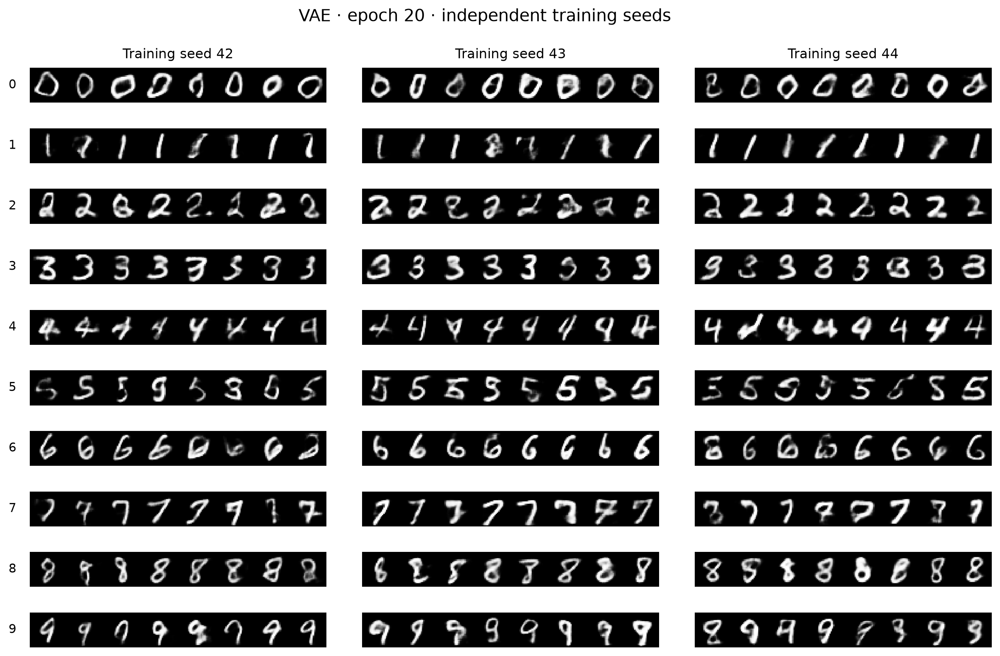
VAE · epoch 20 在独立训练种子上的逐类样本，作为主样本网格的附录。

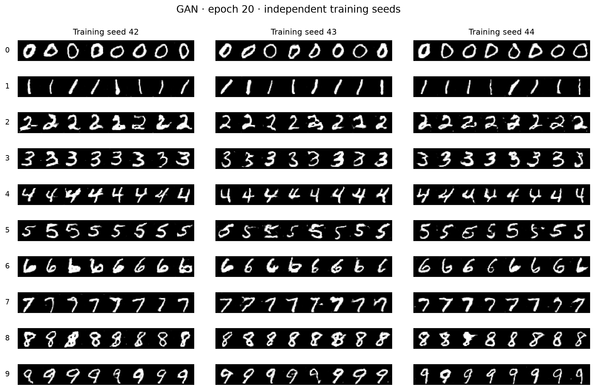
GAN · epoch 20 在独立训练种子上的逐类样本，作为主样本网格的附录。

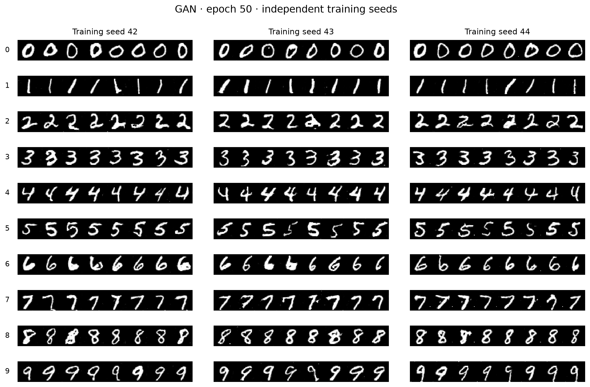
GAN · epoch 50 在独立训练种子上的逐类样本，作为主样本网格的附录。